Scenario
After Karen began working for TAAUSAI, she was suspected of conducting unauthorized and potentially malicious activities within the organization. As a SOC analyst, I was tasked with investigating her system. A disk image of her machine was acquired, revealing that she was operating on a Linux-based system. The objective of this investigation is to analyze the disk image and uncover evidence related to her activities.
Tools Used
FTK Imager
Question 1: Which Linux distribution is being used on this machine?
There are multiple ways to determine the Linux distribution used on a system. One approach is to manually browse
system directories for identifying artifacts. During analysis, I located evidence indicating that the system was
running Kali Linux. Another reliable method is to inspect the /var/log/installer/ directory,
specifically the syslog file, which often contains installation details including the distribution name.
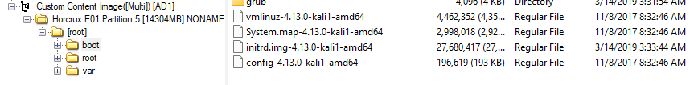
Figure 1: Evidence indicating Kali Linux distribution
Question 2: What is the MD5 hash of the Apache access.log file?
The Apache access log is located in /var/log/apache2/. After locating the access.log
file, I used the "Export File Hash List" feature within FTK Imager to calculate its MD5 hash value.
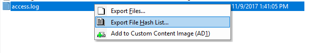
Figure 2: Export file Hash List
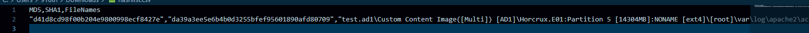
Figure 3: MD5 hash of access.log obtained using FTK Imager
Question 3: It is suspected that a credential dumping tool was downloaded. What is the name of the downloaded file?
To identify downloaded tools, I examined the Downloads directory. Within this directory, I found a compressed (.zip) file containing Mimikatz, a well-known credential dumping tool frequently used in post-exploitation activities.
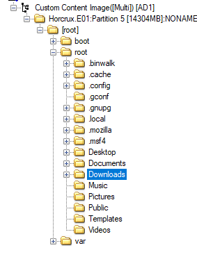
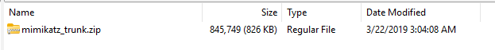
Figure 4-5: Evidence of downloaded credential dumping tool
Question 4: A super-secret file was created. What is the absolute path to this file?
To determine the location of the created file, I analyzed user command history located in
/root/.bash_history. This file records previously executed commands, which revealed the creation
of the "super-secret" file along with its absolute path.
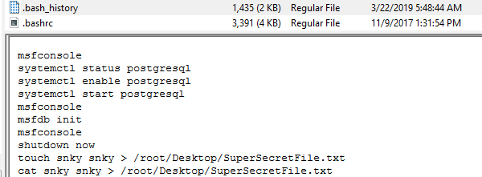
Figure 6: Bash history showing file creation
Question 5: What program used the file didyouthinkwedmakeiteasy.jpg during its execution?
By continuing analysis of the .bash_history file, I identified commands referencing the file
didyouthinkwedmakeiteasy.jpg. The associated command revealed which program was used to execute
or interact with the file.
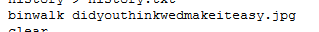
Figure 7: Command history referencing file execution
Question 6: What is the third goal from the checklist Karen created?
I navigated to the user's Desktop directory and located a checklist file created by Karen. By reviewing its contents, I identified the third goal listed in the checklist.
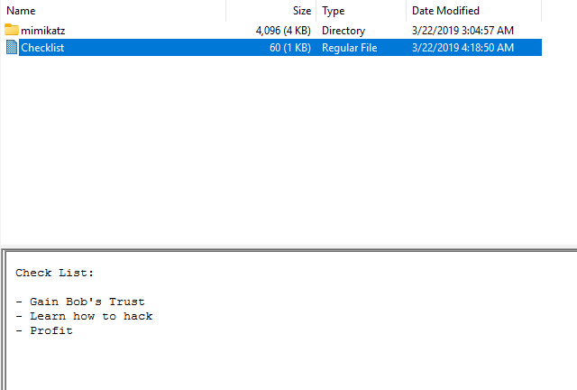
Figure 8: Checklist located on Desktop
Question 7: How many times was Apache run?
Upon examining the /var/log/apache2/ directory, there was no indication that Apache had been
actively running. This absence of log activity confirms that the number of recorded events is zero.
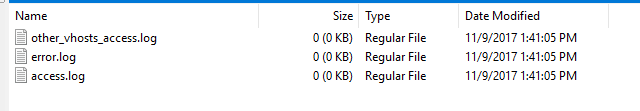
Figure 9: Lack of Apache log activity
Question 8: This machine was used to launch an attack on another. Which file contains the evidence for this?
To identify evidence of attacks launched from the system, I examined the /root/ directory.
Within this location, I discovered a JPEG file that contained relevant evidence indicating malicious activity.
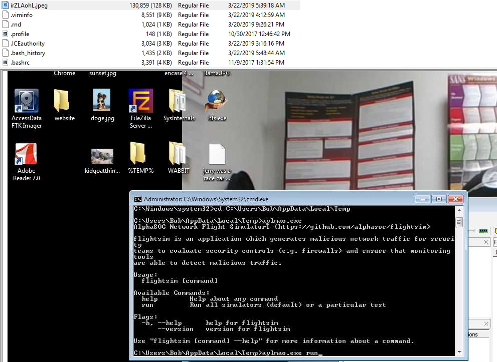
Figure 10: File containing evidence of attack activity
Question 9: It is believed that Karen was taunting a fellow computer expert through a bash script within the Documents directory. Who was the expert that Karen was taunting?
Analysis of files within the Documents directory revealed a bash script that appeared to taunt another computer expert. The contents of the script identified the individual being targeted.
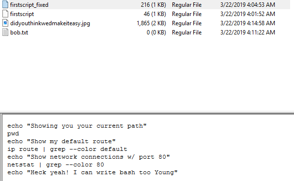
Figure 11: Script containing taunting message
Question 10: A user executed the su command to gain root access multiple times at 11:26. Who was the user?
To determine which user executed the su command, I reviewed the
/var/log/auth.log file. By filtering entries around the specified timestamp (11:26),
I was able to identify the user responsible for multiple privilege escalation attempts.
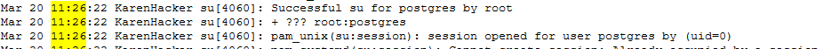
Figure 12: Authentication log showing su usage
Question 11: Based on the bash history, what is the current working directory?
The current working directory can be inferred by analyzing command sequences in
.bash_history. By reviewing multiple cd commands and correlating them with
timestamps, I determined the directory the user was operating in at the specified time.
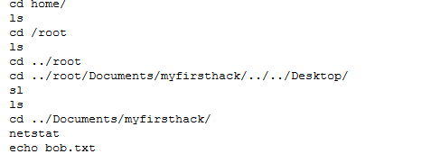
Figure 13: Command history showing working directory